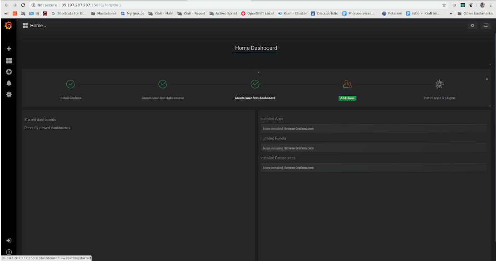
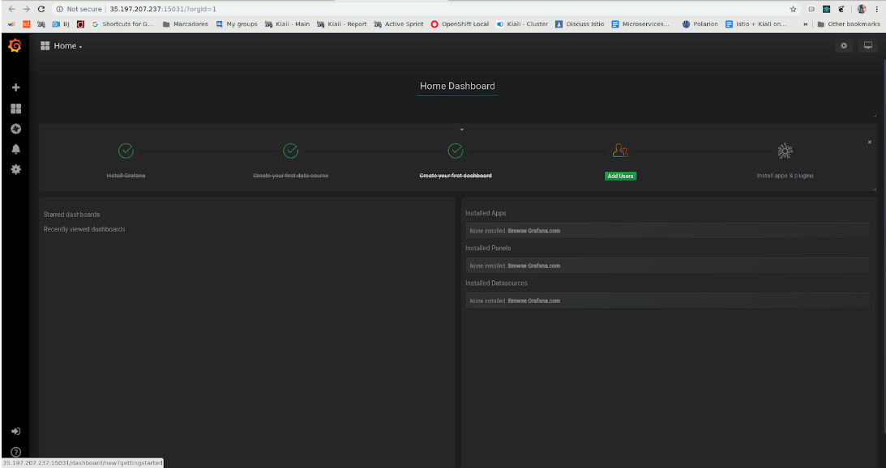
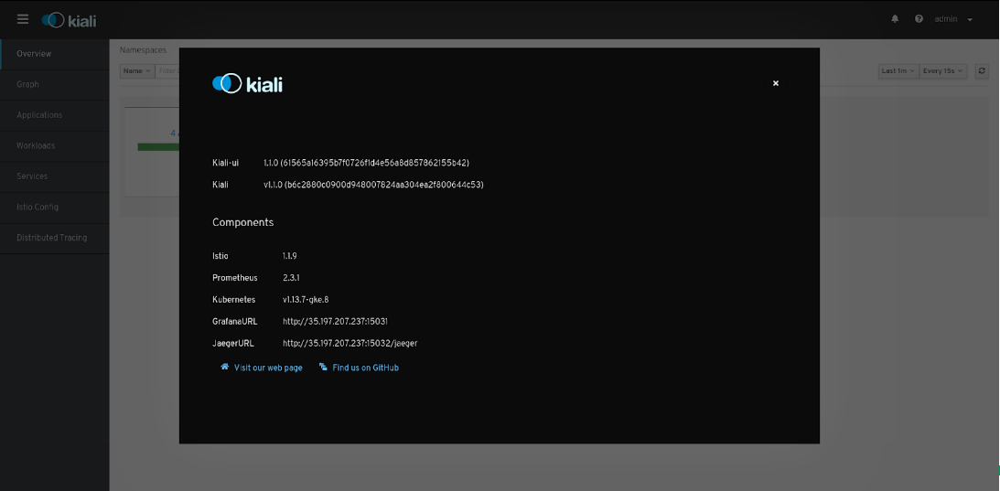

[1] Install Istio and upgrade Kiali
[1.0] Check pre-requisites
google-cloud-sdkcorrectly installedkubectlclient installedhelmcorrectly installedIstio 1.1.9downloadedISTIO_HOMEvariable defined- Update/validate
PATH - Bonus track: No clashes with other kubectl clients !
Save time
All steps are predefined in a script that you can download and personalize
curl -L https://git.io/fjojh > $HOME/install-gke-istio-kiali.sh
chmod +x $HOME/install-gke-istio-kiali.sh
Note: Script is tested on Linux.
Other platforms may need some changes.
[1.1] Create a Kubernetes cluster
Choose a cluster name i.e. lucas-cluster
gcloud container clusters create lucas-cluster \
--cluster-version latest \
--num-nodes 6
# Output
Creating cluster lucas-cluster... Cluster is being health-checked (master is healthy)...done.
Created [https://container.googleapis.com/v1/projects/kubernetes-istio-kiali/zones/europe-west2-a/clusters/lucas-cluster].
kubeconfig entry generated for lucas-cluster.
NAME LOCATION MASTER_VERSION MASTER_IP MACHINE_TYPE NODE_VERSION NUM_NODES STATUS
lucas-cluster europe-west2-a 1.13.7-gke.8 35.242.145.183 n1-standard-1 1.13.7-gke.8 4 RUNNING
[1.2] Retrieve your credentials
gcloud container clusters get-credentials lucas-cluster
# Output
Fetching cluster endpoint and auth data.
kubeconfig entry generated for lucas-cluster.
[1.3] Grant cluster administrator (admin) permissions
To create the necessary RBAC rules for Istio, the current user requires admin access
kubectl create clusterrolebinding cluster-admin-binding \
--clusterrole=cluster-admin \
--user=$(gcloud config get-value core/account)
# Output
clusterrolebinding "cluster-admin-binding" created
[1.4] Install Istio definitions via helm
cd $ISTIO_HOME
kubectl create namespace istio-system
helm template install/kubernetes/helm/istio-init --name istio-init --namespace istio-system | kubectl apply -f -
# Output
configmap "istio-crd-10" created
configmap "istio-crd-11" created
serviceaccount "istio-init-service-account" created
clusterrole "istio-init-istio-system" created
clusterrolebinding "istio-init-admin-role-binding-istio-system" created
job "istio-init-crd-10" created
job "istio-init-crd-11" created
# Verify 53 CRDs are created.
kubectl get crds | grep 'istio.io\|certmanager.k8s.io' | wc -l
[1.5] Install istio demo profile
helm template install/kubernetes/helm/istio --name istio --namespace istio-system \
--values install/kubernetes/helm/istio/values-istio-demo.yaml | kubectl apply -f -
# Verify all Istio pods are up and running
kubectl get pods -n istio-system -w
[1.6.0] Expose the Telemetry add-ons
For demo purposes we will use HTTP instead HTTPS
curl -L https://git.io/fj2rL | kubectl apply -f -
# Define variables
export INGRESS_HOST=$(kubectl -n istio-system get service istio-ingressgateway -o jsonpath='{.status.loadBalancer.ingress[0].ip}')
export KIALI_URL="http://${INGRESS_HOST}:15029/kiali"
export PROMETHEUS_URL="http://${INGRESS_HOST}:15030/"
export GRAFANA_URL="http://${INGRESS_HOST}:15031/"
export JAEGER_URL="http://${INGRESS_HOST}:15032/jaeger"
[1.6.1] Open your URLs
# Linux helper
# xdg-open is a command to open a browser from the command line.
# Mac users can use "open" command
# Windows users can use "cmd" command
# Otherwise, the check is just to confirm you can access addons from your browser
xdg-open ${KIALI_URL} && \
xdg-open ${PROMETHEUS_URL} && \
xdg-open ${GRAFANA_URL} && \
xdg-open ${JAEGER_URL}
[1.6.2] Check Telemetry add-ons
 

|


|
[1.7.0] Install Bookinfo on default namespace
kubectl label namespace default istio-injection=enabled
kubectl apply -f samples/bookinfo/platform/kube/bookinfo.yaml
# Verify all Bookinfo pods are running
kubectl get pods -w
[1.7.1] Expose Bookinfo through Ingress
kubectl apply -f samples/bookinfo/networking/bookinfo-gateway.yaml
# Verify user can access Bookinfo app
export INGRESS_PORT=$(kubectl -n istio-system get service istio-ingressgateway -o jsonpath='{.spec.ports[?(@.name=="http2")].port}')
xdg-open http://${INGRESS_HOST}:${INGRESS_PORT}/productpage

[1.7.2] Observe Bookinfo from Kiali


[1.8.0] Upgrade Kiali
Istio ships a v0.16 version, let's upgrade to a newer one
curl -L https://git.io/fjohL | envsubst > $HOME/update-kiali-cr.yaml
bash <(curl -L https://git.io/getLatestKialiOperator) -oiv v1.0.0 --kiali-cr $HOME/update-kiali-cr.yaml
# Verify Kiali pod is restarted
kubectl get pods -n istio-system -w
[1.8.1] Refresh Kiali
Check Kiali has upgraded to 1.0 version

[1.8.2] Useful troubleshooting
Just if something went wrong
# kiali-operator namespace is "Terminating" but hanged
kubectl patch kiali kiali -n kiali-operator -p '{"metadata":{"finalizers": []}}' --type=merge
# Delete a kubernetes cluster i.e. lucas-cluster
gcloud container clusters delete lucas-cluster